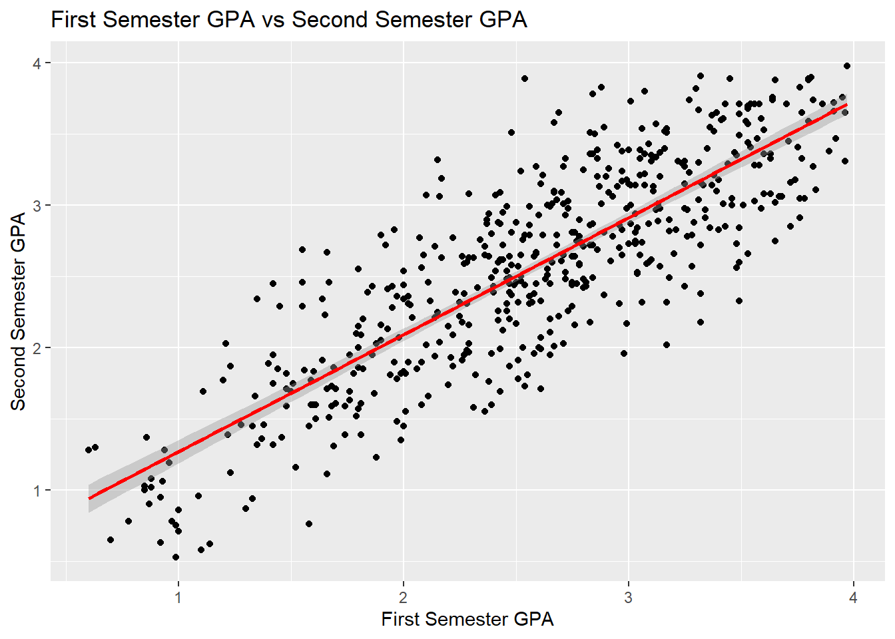
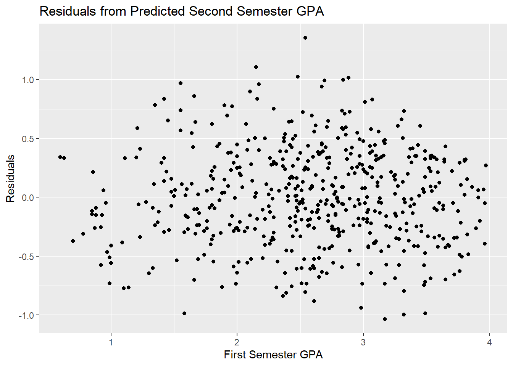
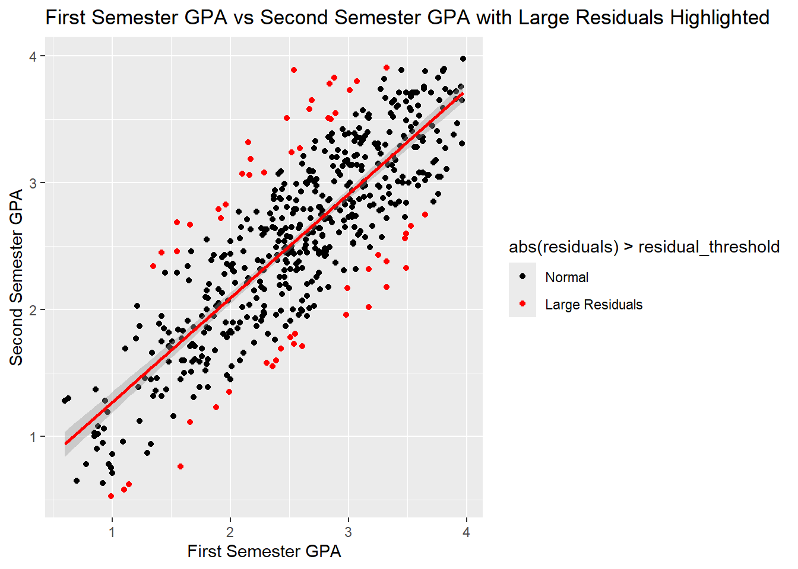
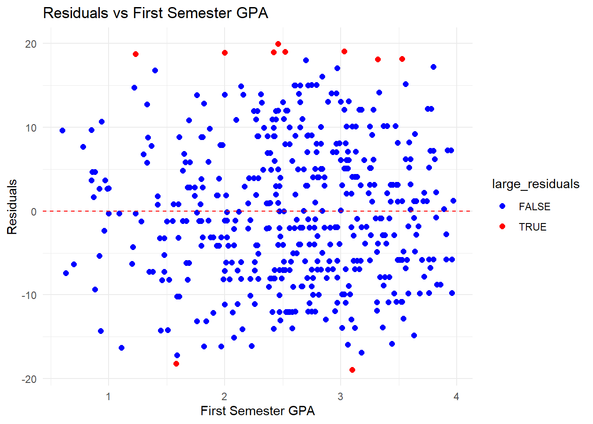
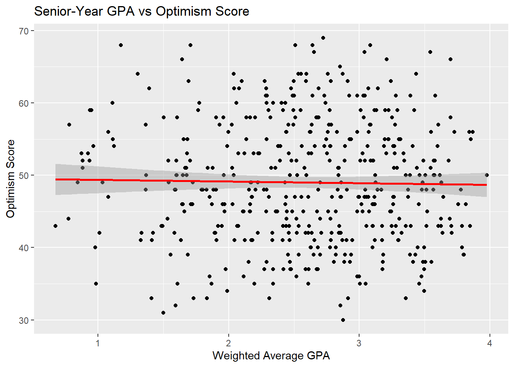
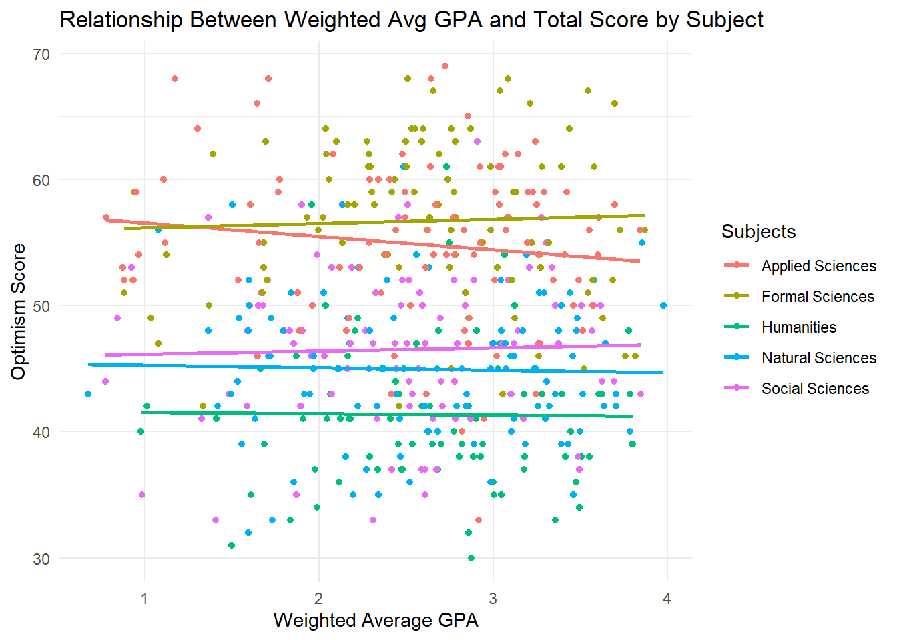
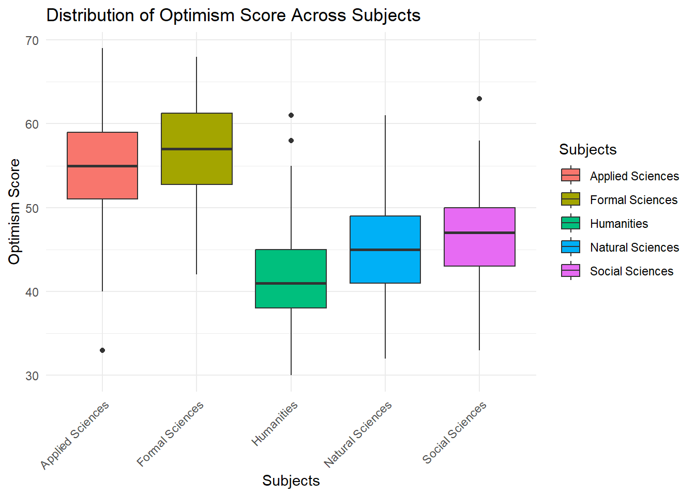

EDRM 718 Adam Brown Final Project
Description
This research report explores the relationships between optimisim scores (from the survey data and measures their outlook on employment and career readiness), reported GPA’s, and the college students academic disciplines. More specifically, this report seeks to answer these three questions, Is senior-year grade point average (GPA) related to the degree of optimism about future employment? Is the relationship of GPA and optimism consistent or different for different categories of disciplines? Is the level of optimism different for different categories of disciplines? The three datasets include survey results from over 700 college seniors. graduating this spring, representing 23 major universities in the United States. These datasets include demographic data, academic performance data, and data from a short (14-item) Likert-type survey which sought to determine their optimism regarding their readiness and likelihood of obtaining a job after graduation
Source of Data: Real World Solutions, Job Prep Demographics, Job Prep GPA, and Job Prep Survey Results. Sourced 24 April 2025.
Analysis
I begin my analysis reading in the three separate data files, tidying the data that is missing or has problems, and then joining the files together using my unique key, which in this case is Student ID number. Now that I have completed the data processing and cleaning, I start by examining the reported GPA’s for the students from the first and second semester. We need to verify consistency of GPA’s before we can create a weighted GPA average.
In Figure 1, I created a scatterplot to verify consistency by observing if there a strong linear relationship exists between first and second semester GPA’s. In Figure 1, we observe that as the GPA for the first semester increases, so does the GPA for the second semester. This tell us that a strong linear relationship does exist. Since a strong linear relationship exists this GPA’s are comparable which means we can create our next scatterplot which will helps us to know if we can predict second semester GPA from first semester GPA.
Figure 1. Scatterplot of First Semester GPA Vs Second Semester GPA.
In Figure 2, I created a scatterplot to identify if patterns exist or not. We do not observe any shapes or patters in the data, which is good because this means the residuals are randomly distributed. This scatterplot helps me to know that my linear model is a good fit and there shouldn’t be significant bias in predicting second semester GPA from first semester. This gives me confidence to create a weighted GPA but first I need to identify and exclude those students who are among those with the ten percent largest residuals. I run this analysis next in Figure 3.
Figure 2. Scatterplot of Residuals from Predicted Second Semester GPA.

In Figure 3, we can observe the students who are among those with the ten percent largest residuals as they are noted in red. We note from our data that there are 54 students who fall into this category. I will remove those students from the data prior to calculating weighted GPA and we will continue to move through the analysis.
Figure 3. Scatterplot of First Semester GPA Vs Second Semester GPA with Large Residuals.

Question #1
Figure 4. Scatterplot of Residuals of First Semester GPA Vs Optimism Score.

Figure 5. Histogram of the Frequency of Absolute Residuals.

Figure 6. Reading Scores by Gender.

Table 1. Reading Scores by Gender.
| Correlation Between Weighted GPA and Optimism Score | ||
|---|---|---|
| Variable 1 | Variable 2 | Correlation_Coefficient |
| weighted_avg_gpa | total_score | −0.02 |
Table 2. Reading Scores by Gender.
| Linear Regression Results: Total Score vs Weighted GPA | ||||
|---|---|---|---|---|
| Term | Estimate | Standard Error | t-Statistic | p-Value |
| (Intercept) | 49.60 | 1.45 | 34.12 | 0.00 |
| weighted_avg_gpa | −0.23 | 0.54 | −0.42 | 0.67 |
Question #2
Figure 6. Reading Scores by Gender.

Table 3. Reading Scores by Gender.
| Linear Regression Model Results by Subject | ||
|---|---|---|
| Subject | Coefficient of Weighted GPA | p-value |
| Applied Sciences | −1.06 | 0.24 |
| Formal Sciences | 0.34 | 0.70 |
| Humanities | −0.11 | 0.91 |
| Natural Sciences | −0.19 | 0.80 |
| Social Sciences | 0.25 | 0.77 |
Table 4. Reading Scores by Gender.
| Interaction Model Results: Total Score vs Weighted GPA and Subjects | ||||
|---|---|---|---|---|
| Term | Estimate | Standard Error | t-Statistic | p-Value |
| (Intercept) | 57.61 | 2.21 | 26.11 | 0.00 |
| weighted_avg_gpa | −1.06 | 0.83 | −1.28 | 0.20 |
| SubjectsFormal Sciences | −1.78 | 3.21 | −0.55 | 0.58 |
| SubjectsHumanities | −15.97 | 3.58 | −4.46 | 0.00 |
| SubjectsNatural Sciences | −12.15 | 3.13 | −3.89 | 0.00 |
| SubjectsSocial Sciences | −11.72 | 3.17 | −3.69 | 0.00 |
| weighted_avg_gpa:SubjectsFormal Sciences | 1.40 | 1.19 | 1.18 | 0.24 |
| weighted_avg_gpa:SubjectsHumanities | 0.96 | 1.32 | 0.72 | 0.47 |
| weighted_avg_gpa:SubjectsNatural Sciences | 0.87 | 1.16 | 0.75 | 0.46 |
| weighted_avg_gpa:SubjectsSocial Sciences | 1.32 | 1.21 | 1.08 | 0.28 |
Question #3
Figure 7. Reading Scores by Gender.

Table 5. Reading Scores by Gender.
| ANOVA Results for Optimism Score by Subject | ||||
|---|---|---|---|---|
| Degrees of Freedom | Sum of Squares | Mean Squares | F Value | p-value |
| 4 | 16,558.74 | 4,139.69 | 114.10 | 0.00 |
| 473 | 17,161.25 | 36.28 | NA | NA |
Table 6. Reading Scores by Gender.
| Tukey's HSD Post-Hoc Test Results | ||||
|---|---|---|---|---|
| Comparison of Subjects | Difference in Means | Lower Bound of CI | Upper Bound of CI | p-value |
| Formal Sciences-Applied Sciences | 1.83 | −0.55 | 4.20 | 0.22 |
| Humanities-Applied Sciences | −13.53 | −15.98 | −11.08 | 0.00 |
| Natural Sciences-Applied Sciences | −9.93 | −12.30 | −7.56 | 0.00 |
| Social Sciences-Applied Sciences | −8.37 | −10.77 | −5.97 | 0.00 |
| Humanities-Formal Sciences | −15.36 | −17.77 | −12.95 | 0.00 |
| Natural Sciences-Formal Sciences | −11.76 | −14.09 | −9.43 | 0.00 |
| Social Sciences-Formal Sciences | −10.20 | −12.56 | −7.84 | 0.00 |
| Natural Sciences-Humanities | 3.60 | 1.19 | 6.00 | 0.00 |
| Social Sciences-Humanities | 5.16 | 2.72 | 7.59 | 0.00 |
| Social Sciences-Natural Sciences | 1.56 | −0.79 | 3.91 | 0.36 |